Acceptance Notifications Sent!
The Program Committee has finalized its selection of accepted submissions.
If you have not yet received the email, you may chek for your own paper on the submission web site.
The list of abstracts accepted as poster or presentation will show up here in the comming days.
Welcome
The RISC-V Summit Europe is the premier event that connects the European movers and shakers – from industry, government, research, academia and ecosystem support – that are building the future of innovation on RISC-V.
RISC-V, the open standard instruction set architecture (ISA), is enabling a range of new applications and research that will define the future of computing in Europe. The region has been central to RISC-V’s success, with one-third of RISC-V’s global community based in Europe.
RISC-V Summit Europe takes place in Bologna from Monday 8th to Thursday 11th June, 2026, with side events on Friday 12th. The combination of strong industrial and academic communities is key to the success of RISC-V in Europe, and for this reason the conference is designed to help attendees to explore both commercial and research applications. RISC-V Summit Europe is an opportunity not to be missed. Come to Bologna to be part of the new wave of European computing innovation!
Summit Overview
Get up to speed on Monday, and start a full week of RISC-V news!
Schedule subject to minor adjustments. Updates to follow here.
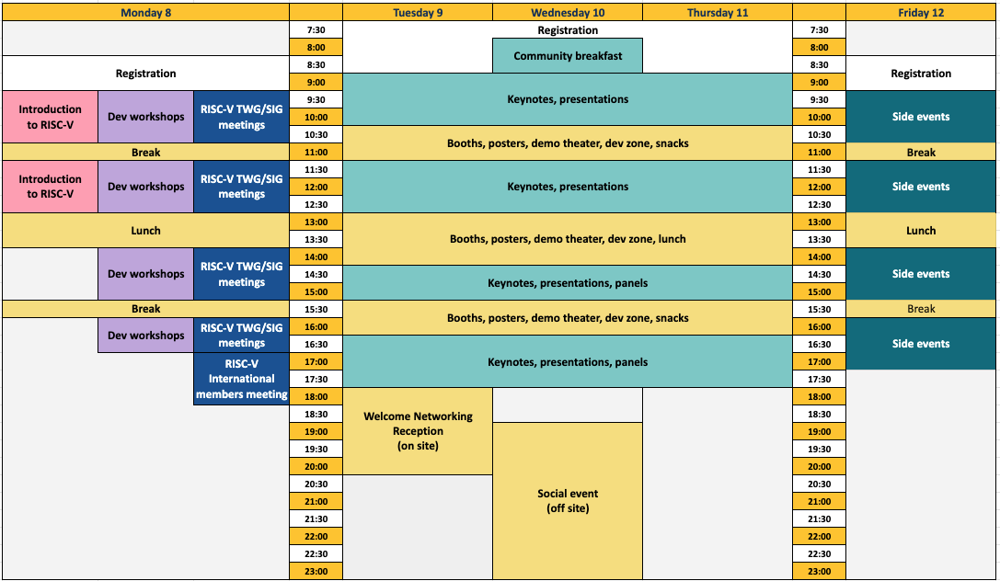
Keynotes & Invited Talks
Learn about the exciting progress of RISC-V across industries and the hardware/software stack from our keynote speakers and invited talks
Check for upcoming updates!
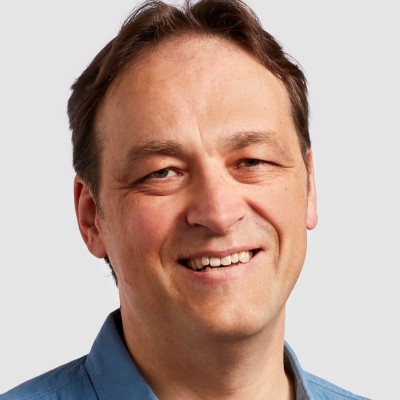
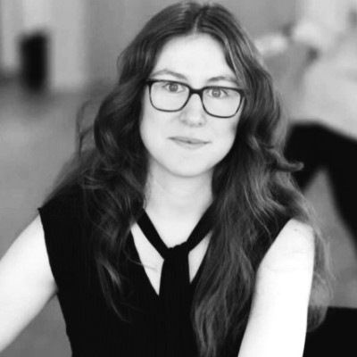
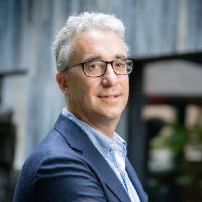
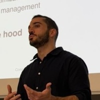
Marco Fariselli
Luxottica
Embedded AI Engineer
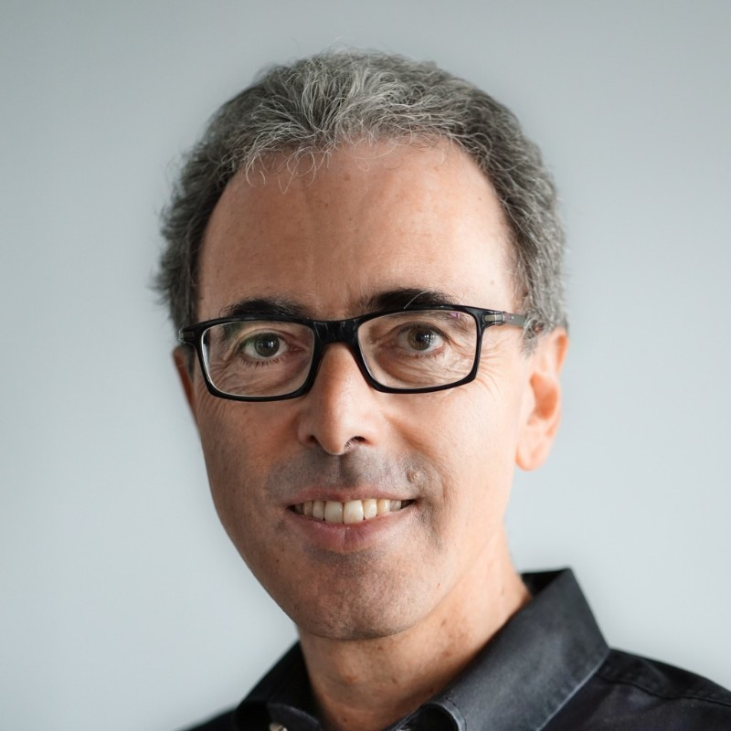
Andrea Gallo
RISC-V International
CEO
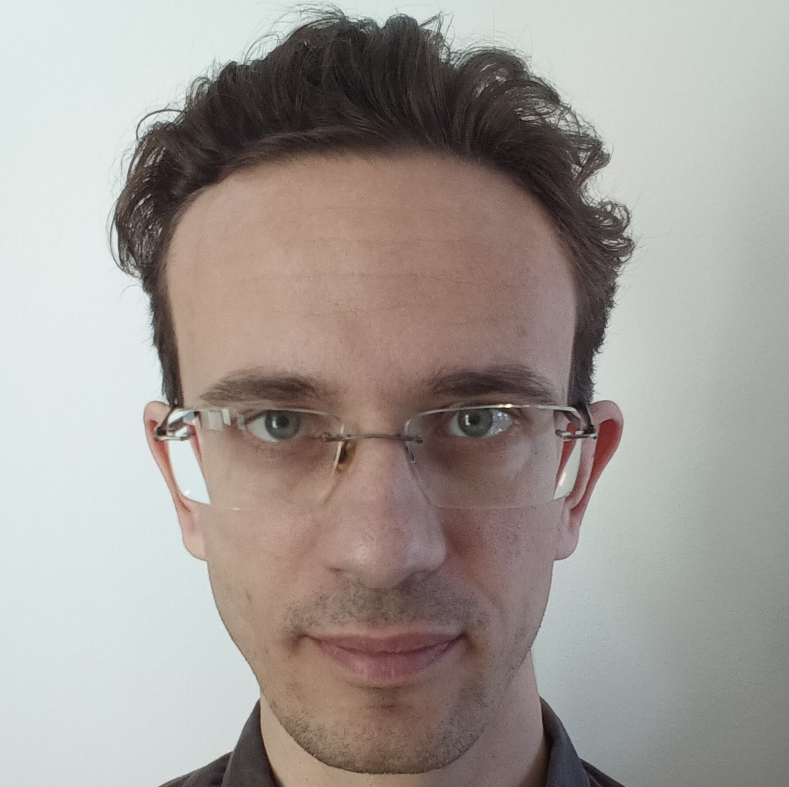
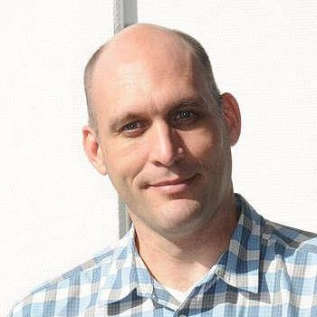
Greg Kroah-Hartman
The Linux Foundation
Fellow
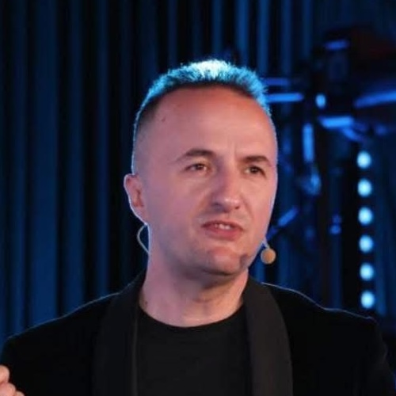
Kushtrium Shala
Digital Valley Albania
Co-Founder
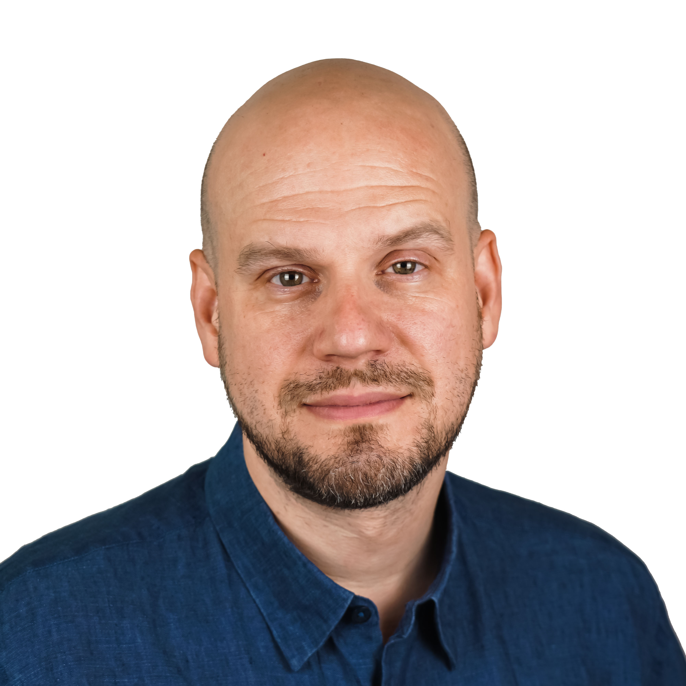
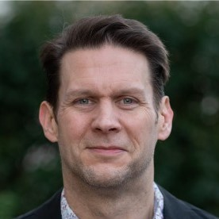
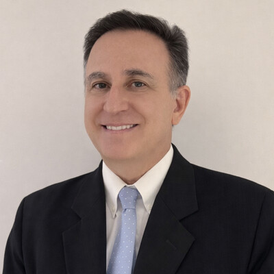
Abstracts and bios
Highlights from RISC-V community ledears!
Check for upcoming updates!
RISC-V State of the Union
By Krste Asanović, Chief Architect, SiFive.
Abstract: In this session RISC-V’s Chief Architect will give an overview of RISC-V adoption across computing markets from Embedded to AI. Krste will discuss new developments in the RISC-V ISA, including security extensions and matrix extensions for AI, as well as new profile and platform initiatives.
Bio: Krste Asanović is Professor Emeritus and a Professor of the Graduate School in the EECS Department at the University of California, Berkeley. He received a PhD in Computer Science from UC Berkeley in 1998 then joined the faculty at MIT, receiving tenure in 2005. He returned to join the faculty at Berkeley in 2007, where he co-founded the Berkeley Parallel Computing Laboratory (‘Par Lab’), and led the ASPIRE Lab, and co-led the ADEPT Lab and Berkeley SLICE Lab. His main research areas are computer architecture, VLSI design, parallel programming and operating system design. He has led the RISC-V open ISA project at Berkeley from its inception in 2010 and co-founded the RISC-V Foundation in 2015, which has now become RISC-V International. He is now Chief Architect at RISC-V International. He also co-founded SiFive in 2015 to commercialize RISC-V processors, where he is Chief Architect. He is an ACM Fellow and an IEEE Fellow. (CC BY 3.0 by Krste Asanovic)
RISC-V: Enabling Open Physical AI
By Luca Benini, Full Professor of Digital Circuits and Systems, ETH Zurich, Unibo.
Abstract: Autonomous systems' (robots, cars, satellites...) capabilities will be driven by Physical AI, Energy efficiency is not the only key constraint for future physical AI chips, as safety and robustness are extremely critical for autonomous operation To tackle the compound challenge, we need to aggressively optimize efficiency, leveraging specialization across all levels of the chip design hierarchy, pushing into domain-specific design automation tools and methodologies, while at the same time accounting for the increasing reliability concerns in advanced IC technology. In this talk, I will give concrete examples of how RISC-V enables deep domain specialization, for efficient and safe, reliable Physical AI, emphasizing the strategic importance of an open-platform approach.
Bio: Luca Benini holds the chair of digital Circuits and systems at ETHZ and is Full Professor at the Università di Bologna. He received a PhD from Stanford University. He is a Fellow of the IEEE, of the ACM, a member of the Academia Europaea and a funding member of the Italian Academy of Engineering and Technology. He is the recipient of various awards, including the 2023 IEEE CS E.J. McCluskey Award, and the 2024 IEEE CS Open Source Hardware contribution Award.
Albania is a AI-Factory - How RISC-V, Education, and Open Architecture can turn a country into an engine of AI capability
By Tanya Dadasheva, Co-Founder, Ainekko.
Abstract: The European AI Factory initiative aims to distribute sovereign compute capacity across the continent. But for accession countries in the Western Balkans, participation has remained largely aspirational — constrained by the assumption that AI infrastructure requires massive existing semiconductor ecosystems or hyperscaler partnerships. Albania is charting a different course. Albania’s ICT sector today employs tens of thousands of skilled engineers, but almost entirely in software outsourcing — writing code for other countries’ products, on other countries’ architectures. It is a model that creates employment but not ownership, capability but not sovereignty. The age of AI demands a transformation: from consuming compute to shaping it. This talk presents a strategy to establish one of Europe’s first RISC-V-native AI compute facilities: an AI Factory built on open architecture principles, designed not only to serve Albania’s own public-sector AI needs but to act as a regional compute hub for the Western Balkans and a gateway for Middle Eastern partners seeking EU-aligned AI infrastructure. The strategy begins not in the data center but in the classroom: embedding RISC-V into Albanian computer science and engineering education, connecting that pipeline to a sovereign AI compute facility, and transforming a generation of outsourcing engineers into architects of AI infrastructure. Kushtrim Shala draws on Albania’s track record in digital innovation — including its EU-recognized European Digital Innovation Hub — to outline how a small, agile country can move faster than larger member states in adopting open ISA infrastructure. The talk addresses what it takes to bootstrap a semiconductor culture in a country that has never had one, and makes the case that RISC-V is not merely a technical choice but a strategic instrument of digital sovereignty. The Western Balkans — with their young populations, EU ambitions, and hunger to move up the value chain — may be the most fertile ground in Europe for RISC-V adoption. For EU policymakers and the EuroHPC ecosystem, Albania’s approach offers a lighthouse model for how accession countries can contribute to, rather than merely consume, Europe’s digital sovereignty agenda.
Beyond Privilege: The RISC‑V Isolation Toolbox from Microcontrollers to Confidential Computing
By Andrew Dellow, Director of Engineering, Qualcomm.
Abstract: This talk surveys the RISC‑V isolation toolbox—spanning PMP/ePMP, SPMP, privilege levels, virtualization, Risc-V Worlds, and emerging Supervisor Domains—and shows how these mechanisms can be combined to build scalable, composable security and safety systems beyond traditional privilege separation. RISC‑V has steadily developed a rich and diverse set of isolation mechanisms, including ePMP for physical memory protection, privilege levels for execution control, page‑based virtual memory for scalable address isolation, hypervisor extensions for virtualization, and Worlds for hardware‑enforced compartmentalization. Each of these tools addresses different isolation challenges, from resource‑constrained microcontrollers to full server‑class systems. Modern platforms increasingly demand fine‑grained, composable isolation rather than coarse, monolithic privilege separation. Mixed‑criticality systems, safety‑certified embedded platforms, and confidential computing environments all require isolation techniques that can be layered, combined, and adapted to different threat models and deployment constraints. This talk presents a toolbox‑oriented view of RISC‑V isolation. Supervisor Domains are introduced as an emerging architectural direction within this toolbox, exploring finer‑grained isolation within supervisor mode itself. While still evolving, Supervisor Domains illustrate the broader move beyond privilege levels toward more modular and composable execution domains and provide a useful lens for understanding how future RISC‑V systems may further decompose trusted software.
Bio: Andrew Dellow is a director in the technical standards group at Qualcomm and currently chair of the Security Horizontal Committee at RISC-V International. He is also a RISC-V Ambassador, and Chair of the SoC Infrastructure Horizontal Committee. With over 25 years' experience in system on chip architecture and security, starting with the original development of robust Set Top Box SoCs for Pay TV, he is a former Chief Security Architect at HiSilicon Technologies, Distinguished Engineer and Technical Director at Broadcom Corp., and Security Architect at STMicroelectronics. His passion is driving secure architectures and implementations, holding more than 30 patents around SoC security.
RISC-V Server Platform 1.0: One Spec to Boot Them All
By Radim Krcmar, Engineer, Qualcomm.
Abstract: As RISC‑V enters high‑performance computing (from traditional data‑center servers to edge infrastructure, telecom systems, and industrial compute platforms) a unified platform definition is essential. Without a consistent hardware and firmware contract, system‑software vendors face fragmented bring‑up, slowing ecosystem adoption. The RISC‑V Server Platform Specification solves this by defining a clear baseline that supports high‑performance RISC‑V platforms. Built by composing existing standards such as the RVA23 profile, Server‑class SoC requirements, UEFI/ACPI boot via BRS, SBI interfaces, and modern security foundations including roots of trust, secure boot, attestation, and BMC‑based management, the specification enables OS and hypervisor developers to target a single portable binary. This talk outlines the goals, structure, and key requirements of Server Platform Specification 1.0, explaining how it reduces fragmentation, accelerates system‑software portability, and provides a stable foundation for interoperable, production‑ready RISC‑V platforms across diverse deployment environments.
Bio: Radim Krčmář is an engineer at Qualcomm whose work spans the lower levels of the RISC-V stack, from ISA specifications to operating system design, with a current focus on security and virtualization.
Matrix Extensions for RISC-V: Delivering on the Promise
By Philipp Tomsich, Founder, VRULL GmbH.
Abstract: When the RISC-V matrix extensions effort was restructured into four complementary approaches at Summit Europe 2025 in Paris, it was a bold architectural bet — that the breadth of the RISC-V ecosystem demands not one rigid solution but a family of extensions spanning from lightweight vector-matrix primitives to fully independent matrix engines. One year later, that bet is paying off. This talk reports on the rapid progress across the matrix extension family as two of the four extensions — the Integrated Matrix Extensions (IME) and the Vector Matrix Extensions (VME) — converge on specification freeze. We trace the architectural decisions that brought IME and VME from concept to maturity: algebraic tile geometry that scales naturally with VLEN, the deliberate reuse of RVV state for seamless software integration, and the introduction of dedicated accumulator registers to unlock higher computational intensity where implementations demand it. Crucially, work is starting to unify IME and VME through a common LLVM-MLIR lowering path — giving compilers and AI/ML frameworks a single abstraction that targets both extensions, ensuring that the software ecosystem scales with the hardware rather than fragmenting across it. For Europe's semiconductor industry — from research institutions and startups to established design houses — standardized, open matrix extensions represent a strategic opportunity: competitive AI/ML and HPC capability on an open ISA, free from proprietary lock-in. RISC-V matrix support is no longer a roadmap item. It is arriving.
Bio: Philipp started his career as a compiler engineer at SGI, moved through banking and government IT consulting, and spent a decade at TU Vienna — teaching software engineering and OS kernels, researching runtime systems and compilers for HPC, and working on parallelised implementations of AI kernels as early as 2002 (we called them Self-Organising Maps back then — little did we know). He founded Theobroma Systems — an embedded systems company later acquired by Cherry GmbH — where he built the engineering culture and product discipline that VRULL inherits. At VRULL, he leads the technical work across ISA design, compiler engineering, and AI software enablement. A frequent speaker and a believer that sovereignty comes from sharing — not from hoarding — he is also a vocal advocate of AI-enabled companies: organisations that embed AI into how they work, not just what they sell. If there's a compiler problem upstream that nobody wants to own, he's probably already working on it. Philipp is the RISC-V Board Treasurer (Strategic Representative) & Technical Steering Committee Vice-Chair
Transforming MCUs in an AI-Defined Era
By Edward Wilford, Senior Research Director, Automotive, Omdia.
Abstract: As artificial intelligence reshapes embedded systems, MCUs are evolving from simple control devices into intelligent, distributed computing nodes. This talk explores how RISC-V architecture and scalable AI frameworks are enabling a pragmatic, incremental approach to system transformation—particularly critical in automotive applications where safety, reliability, and legacy integration remain paramount.
Bio: Edward is the Senior Research Director, Automotive, having previously covered automotive AI and semiconductors as Senior Principal Analyst, IoT, at Omdia. He has written extensively on embedded applications processors and GPUs, edge AI, advanced connectivity, and novel semiconductor architectures such as RISC-V. He started in the industry in 2016 when he joined Arm as a market intelligence analyst, leading market research and forecasting in the automotive and IoT division. He has also worked in financial services and media roles in London. He has a BA from Durham University and an MPhil in Linguistics from the University of Cambridge.
RISC-V for the Planet: Open-Source Microprocessors in the Internet of Trees
By Marcelo Zuffo, Full Professor, Escola Politécnica da USP.
Abstract: Climate change and environmental degradation demand new approaches for large-scale, continuous, and intelligent sensing of natural ecosystems. The Internet of Trees proposes a distributed infrastructure in which smart environmental probes deployed in forest environments become active nodes in a real-time environmental intelligence network. Such a vision requires computing platforms that are low-power, secure, adaptable, and affordable. In this context, RISC-V offers a powerful foundation for next-generation environmental sensing systems. As an open-source instruction set architecture, RISC-V enables technological flexibility, design transparency, and long-term digital sovereignty. It also allows customized processors tailored to edge AI, wireless sensor networks, secure communication, and ultra-low-power operation. These features are especially important for climate-oriented deployments in remote and resource-constrained environments. This keynote presents the Internet of Trees project as a case study for the strategic use of open-source microprocessor technology. It discusses how RISC-V can support distributed sensing, local data processing, trusted operation, and scalable integration with cloud-based environmental platforms. Beyond technical efficiency, the talk argues that open microprocessor ecosystems can strengthen local innovation and sustainable semiconductor capacity. In this sense, RISC-V is not only a processor architecture, but also an instrument for building resilient and sovereign infrastructures for planetary monitoring. The Internet of Trees, therefore, illustrates how open silicon can help connect sustainability, intelligence, and environmental stewardship. This perspective is particularly relevant for emerging economies seeking both climate action and technological autonomy. The convergence of open hardware and environmental intelligence may define a new class of digital infrastructure for the living world. RISC-V can be one of its most important enabling technologies.